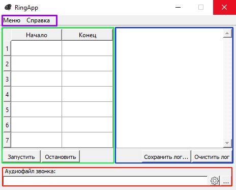

Главное окно

Главное окно отображается каждый раз при запуске программы. Здесь выставляются ключевые параметры программы, а также отображается её текущее состояние. Главное окно можно условно разбить на 4 зоны: зону управления расписанием звонков, зону лога, зону управления параметрами звонка и зону полосы меню приложения.
A. Зелёным цветом выделена зона, отвечающая за управление расписанием звонков
Таблица служит для внесения расписания, согласно которому программа будет подавать звонки. Обратите внимание, формат ввода данных в ячейку таблицы должен строго соответствовать "ЧЧ:ММ" (кавычки при вводе не указываются).
Кнопка "Запустить" запускает работу программы, если пользователь корректно заполнил хотя бы одну ячейку таблицы расписания. В случае успеха, программа самостоятельно выбирает время из ячейки, разница между значением которой и текущим временем оказалась минимальной. Если будет подан звонок из последней доступной ячейки в таблице, программа автоматически выберет первую доступную ячейку в таблице.
Когда подходящая ячейка будет найдена, программа запустит таймер, содержащий разность между значением времени следующей ячейки и текущим значением времени. После подачи звонка, программа автоматически выберет следующее время подачи звонка и запустит таймер.
Кнопка "Остановить" останавливает таймер, если он был запущен. Это означает, что программа больше не будет подавать звонки до тех пор, пока пользователь не нажмёт на кнопку "Запустить".
B. Красный цвет показывает зону, отвечающую за управление параметрами звонка.
Текстовое поле "Аудиофайл звонка" содержит абсолютный путь к текущему аудиофайлу звонка (в случае, если он был выбран пользователем).
Кнопка вызывает диалоговое окно, позволяющее пользователю выбрать аудиофайл, который будет использоваться программой для подачи звонка. Следует помнить, что программа останавливает таймер в случае, если пользователь выберет новый аудиофайл.
Кнопка отвечает за вызов окна расширенных настроек звонка.
Обратите внимание: программа предоставляет встроенный аудиофайл звонка, поэтому для её работы не обязательно указывать свой.
C. Зона лога выделена синим цветом.
Текстовое поле с полосой прокрутки является логом. Сюда программа будет выводить информацию о важных действиях (например, выбор нового аудиофайла для звонка) как со стороны пользователя, так и со стороны программы.
Кнопка "Сохранить лог" вызывает диалоговое окно, позволяющее пользователю выбрать место и название файла, в который будет сохранена вся информация текстового поля лога.
Кнопка "Очистить лог" очищает текстовое поле лога. Нажатие этой кнопки никак не повлияет на работу программы.
D. Фиолетовым цветом выделена зона полосы меню приложения.
Меню->Сохранить настройки сохраняет текущую конфигурацию приложения.
Меню->Сохранить настройки как... инициирует вызов диалогового окна, позволяющего пользователю выбрать место и название файла, в который будет сохранена текущая конфигурация приложения.
Меню->Загрузить настройки загружает настройки приложения из файла Settings.ini, расположенного в папке Config, которая, в свою очередь, находится в папке с программой.
Меню->Параметры вызывает окно параметров приложения.
Обратите внимание: после того, как таймер завершит свой отсчёт, программа заблокирует возможность выбора другого аудиофайла, сохранения и загрузки конфигурации приложения, а также вызов окон "Параметры приложения" и "Параметры звонка". В случае, если эти окна были открыты, программа закроет их, не сохранив изменения.